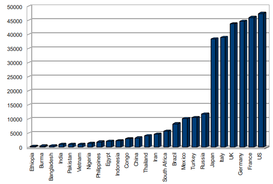

Algorithm to generate numerical concept hierarchy
I have a couple of numerical datasets that I need to create a concept hierarchy for. For now, I have been doing this manually by observing the data (and a corresponding linechart). Based on my intuition, I created some acceptable hierarchies.
This seems like a task that can be automated. Does anyone know if there is an algorithm to generate a concept hierarchy for numerical data?
To give an example, I have the following dataset:
Bangladesh 521 Brazil 8295 Burma 446 China 3259 Congo 2952 Egypt 2162 Ethiopia 333 France 46037 Germany 44729 India 1017 Indonesia 2239 Iran 4600 Italy 38996 Japan 38457 Mexico 10200 Nigeria 1401 Pakistan 1022 Philippines 1845 Russia 11807 South Africa 5685 Thailand 4116 Turkey 10479 UK 43734 US 47440 Vietnam 1042

for which I created the following hierarchy:
- LOWEST ( < 1000)
- LOW (1000 - 2500)
- MEDIUM (2501 - 7500)
- HIGH (7501 - 30000)
- HIGHEST ( > 30000)
Answer
Maybe you need a clustering algorithm?
Quoting from the link:
Cluster analysis or clustering is the assignment of a set of observations into subsets (called clusters) so that observations in the same cluster are similar in some sense. Clustering is a method of unsupervised learning, and a common technique for statistical data analysis used in many fields
Suggest
Jenks Natural Breaks is a very efficient single dimension clustering scheme: http://www.spatialanalysisonline.com/OUTPUT/html/Univariateclassificationschemes.html#_Ref116892931
As comments have noted, this is very similar to k-means. However, I've found it even easier to implement, particularly the variation found in Borden Dent's Cartography: http://www.amazon.com/Cartography-Thematic-Borden-D- Dent/dp/0697384950